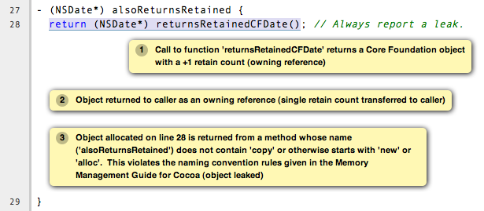

Source Annotations
The Clang frontend supports several source-level annotations in the form of GCC-style attributes and pragmas that can help make using the Clang Static Analyzer more useful. These annotations can both help suppress false positives as well as enhance the analyzer's ability to find bugs.
This page gives a practical overview of such annotations. For more technical specifics regarding Clang-specific annotations please see the Clang's list of language extensions. Details of "standard" GCC attributes (that Clang also supports) can be found in the GCC manual, with the majority of the relevant attributes being in the section on function attributes.
Note that attributes that are labeled Clang-specific are not recognized by GCC. Their use can be conditioned using preprocessor macros (examples included on this page).
Specific Topics
Annotations to Enhance Generic Checks
Null Pointer Checking
Attribute 'nonnull'
The analyzer recognizes the GCC attribute 'nonnull', which indicates that a function expects that a given function parameter is not a null pointer. Specific details of the syntax of using the 'nonnull' attribute can be found in GCC's documentation.
Both the Clang compiler and GCC will flag warnings for simple cases where a null pointer is directly being passed to a function with a 'nonnull' parameter (e.g., as a constant). The analyzer extends this checking by using its deeper symbolic analysis to track what pointer values are potentially null and then flag warnings when they are passed in a function call via a 'nonnull' parameter.
Example
$ cat test.m
int bar(int*p, int q, int *r) __attribute__((nonnull(1,3)));
int foo(int *p, int *q) {
return !p ? bar(q, 2, p)
: bar(p, 2, q);
}
Running scan-build over this source produces the following output:
Mac OS X API Annotations
Cocoa & Core Foundation Memory Management Annotations
The analyzer supports the proper management of retain counts for both Cocoa and Core Foundation objects. This checking is largely based on enforcing Cocoa and Core Foundation naming conventions for Objective-C methods (Cocoa) and C functions (Core Foundation). Not strictly following these conventions can cause the analyzer to miss bugs or flag false positives.
One can educate the analyzer (and others who read your code) about methods or functions that deviate from the Cocoa and Core Foundation conventions using the attributes described here. However, you should consider using proper naming conventions or the objc_method_family attribute, if applicable.
Attribute 'ns_returns_retained' (Clang-specific)
The GCC-style (Clang-specific) attribute 'ns_returns_retained' allows one to annotate an Objective-C method or C function as returning a retained Cocoa object that the caller is responsible for releasing (via sending a release message to the object). The Foundation framework defines a macro NS_RETURNS_RETAINED that is functionally equivalent to the one shown below.
Placing on Objective-C methods: For Objective-C methods, this annotation essentially tells the analyzer to treat the method as if its name begins with "alloc" or "new" or contains the word "copy".
Placing on C functions: For C functions returning Cocoa objects, the analyzer typically does not make any assumptions about whether or not the object is returned retained. Explicitly adding the 'ns_returns_retained' attribute to C functions allows the analyzer to perform extra checking.
Important note when using Garbage Collection: Note that the analyzer interprets this attribute slightly differently when using Objective-C garbage collection (available on Mac OS 10.5+). When analyzing Cocoa code that uses garbage collection, "alloc" methods are assumed to return an object that is managed by the garbage collector (and thus doesn't have a retain count the caller must balance). These same assumptions are applied to methods or functions annotated with 'ns_returns_retained'. If you are returning a Core Foundation object (which may not be managed by the garbage collector) you should use 'cf_returns_retained'.
Example
$ cat test.m #import <Foundation/Foundation.h> #ifndef __has_feature // Optional. #define __has_feature(x) 0 // Compatibility with non-clang compilers. #endif #ifndef NS_RETURNS_RETAINED #if __has_feature(attribute_ns_returns_retained) #define NS_RETURNS_RETAINED __attribute__((ns_returns_retained)) #else #define NS_RETURNS_RETAINED #endif #endif @interface MyClass : NSObject {} - (NSString*) returnsRetained NS_RETURNS_RETAINED; - (NSString*) alsoReturnsRetained; @end @implementation MyClass - (NSString*) returnsRetained { return [[NSString alloc] initWithCString:"no leak here"]; } - (NSString*) alsoReturnsRetained { return [[NSString alloc] initWithCString:"flag a leak"]; } @end
Running scan-build on this source file produces the following output:
Attribute 'ns_returns_not_retained' (Clang-specific)
The 'ns_returns_not_retained' attribute is the complement of 'ns_returns_retained'. Where a function or method may appear to obey the Cocoa conventions and return a retained Cocoa object, this attribute can be used to indicate that the object reference returned should not be considered as an "owning" reference being returned to the caller. The Foundation framework defines a macro NS_RETURNS_NOT_RETAINED that is functionally equivalent to the one shown below.
Usage is identical to ns_returns_retained. When using the attribute, be sure to declare it within the proper macro that checks for its availability, as it is not available in earlier versions of the analyzer:
$ cat test.m #ifndef __has_feature // Optional. #define __has_feature(x) 0 // Compatibility with non-clang compilers. #endif #ifndef NS_RETURNS_NOT_RETAINED #if __has_feature(attribute_ns_returns_not_retained) #define NS_RETURNS_NOT_RETAINED __attribute__((ns_returns_not_retained)) #else #define NS_RETURNS_NOT_RETAINED #endif #endif
Attribute 'cf_returns_retained' (Clang-specific)
The GCC-style (Clang-specific) attribute 'cf_returns_retained' allows one to annotate an Objective-C method or C function as returning a retained Core Foundation object that the caller is responsible for releasing. The CoreFoundation framework defines a macro CF_RETURNS_RETAINED that is functionally equivalent to the one shown below.
Placing on Objective-C methods: With respect to Objective-C methods., this attribute is identical in its behavior and usage to 'ns_returns_retained' except for the distinction of returning a Core Foundation object instead of a Cocoa object. This distinction is important for two reasons:
- Core Foundation objects are not automatically managed by the Objective-C garbage collector.
- Because Core Foundation is a C API, the analyzer cannot always tell that a pointer return value refers to a Core Foundation object. In contrast, it is trivial for the analyzer to recognize if a pointer refers to a Cocoa object (given the Objective-C type system).
Placing on C functions: When placing the attribute 'cf_returns_retained' on the declarations of C functions, the analyzer interprets the function as:
- Returning a Core Foundation Object
- Treating the function as if it its name contained the keywords "create" or "copy". This means the returned object as a +1 retain count that must be released by the caller, either by sending a release message (via toll-free bridging to an Objective-C object pointer), calling CFRelease (or similar function), or using CFMakeCollectable to register the object with the Objective-C garbage collector.
Example
In this example, observe the difference in output when the code is compiled to not use garbage collection versus when it is compiled to only use garbage collection (-fobjc-gc-only).
$ cat test.m $ cat test.m #import <Cocoa/Cocoa.h> #ifndef __has_feature // Optional. #define __has_feature(x) 0 // Compatibility with non-clang compilers. #endif #ifndef CF_RETURNS_RETAINED #if __has_feature(attribute_cf_returns_retained) #define CF_RETURNS_RETAINED __attribute__((cf_returns_retained)) #else #define CF_RETURNS_RETAINED #endif #endif @interface MyClass : NSObject {} - (NSDate*) returnsCFRetained CF_RETURNS_RETAINED; - (NSDate*) alsoReturnsRetained; - (NSDate*) returnsNSRetained NS_RETURNS_RETAINED; @end CF_RETURNS_RETAINED CFDateRef returnsRetainedCFDate() { return CFDateCreate(0, CFAbsoluteTimeGetCurrent()); } @implementation MyClass - (NSDate*) returnsCFRetained { return (NSDate*) returnsRetainedCFDate(); // No leak. } - (NSDate*) alsoReturnsRetained { return (NSDate*) returnsRetainedCFDate(); // Always report a leak. } - (NSDate*) returnsNSRetained { return (NSDate*) returnsRetainedCFDate(); // Report a leak when using GC. } @end
Running scan-build on this example produces the following output:
When the above code is compiled using Objective-C garbage collection (i.e., code is compiled with the flag -fobjc-gc or -fobjc-gc-only), scan-build produces both the above error (with slightly different text to indicate the code uses garbage collection) as well as the following warning, which indicates a leak that occurs only when using garbage collection:

Attribute 'cf_returns_not_retained' (Clang-specific)
The 'cf_returns_not_retained' attribute is the complement of 'cf_returns_retained'. Where a function or method may appear to obey the Core Foundation or Cocoa conventions and return a retained Core Foundation object, this attribute can be used to indicate that the object reference returned should not be considered as an "owning" reference being returned to the caller. The CoreFoundation framework defines a macro CF_RETURNS_NOT_RETAINED that is functionally equivalent to the one shown below.
Usage is identical to cf_returns_retained. When using the attribute, be sure to declare it within the proper macro that checks for its availability, as it is not available in earlier versions of the analyzer:
$ cat test.m #ifndef __has_feature // Optional. #define __has_feature(x) 0 // Compatibility with non-clang compilers. #endif #ifndef CF_RETURNS_NOT_RETAINED #if __has_feature(attribute_cf_returns_not_retained) #define CF_RETURNS_NOT_RETAINED __attribute__((cf_returns_not_retained)) #else #define CF_RETURNS_NOT_RETAINED #endif #endif
Attribute 'ns_consumed' (Clang-specific)
The 'ns_consumed' attribute can be placed on a specific parameter in either the declaration of a function or an Objective-C method. It indicates to the static analyzer that a release message is implicitly sent to the parameter upon completion of the call to the given function or method. The Foundation framework defines a macro NS_RELEASES_ARGUMENT that is functionally equivalent to the NS_CONSUMED macro shown below.
Important note when using Garbage Collection: Note that the analyzer essentially ignores this attribute when code is compiled to use Objective-C garbage collection. This is because the release message does nothing when using GC. If the underlying function/method uses something like CFRelease to decrement the reference count, consider using the cf_consumed attribute instead.
Example
$ cat test.m #ifndef __has_feature // Optional. #define __has_feature(x) 0 // Compatibility with non-clang compilers. #endif #ifndef NS_CONSUMED #if __has_feature(attribute_ns_consumed) #define NS_CONSUMED __attribute__((ns_consumed)) #else #define NS_CONSUMED #endif #endif void consume_ns(id NS_CONSUMED x); void test() { id x = [[NSObject alloc] init]; consume_ns(x); // No leak! } @interface Foo : NSObject + (void) releaseArg:(id) NS_CONSUMED x; + (void) releaseSecondArg:(id)x second:(id) NS_CONSUMED y; @end void test_method() { id x = [[NSObject alloc] init]; [Foo releaseArg:x]; // No leak! } void test_method2() { id a = [[NSObject alloc] init]; id b = [[NSObject alloc] init]; [Foo releaseSecondArg:a second:b]; // 'a' is leaked, but 'b' is released. }
Attribute 'cf_consumed' (Clang-specific)
The 'cf_consumed' attribute is practically identical to ns_consumed. The attribute can be placed on a specific parameter in either the declaration of a function or an Objective-C method. It indicates to the static analyzer that the object reference is implicitly passed to a call to CFRelease upon completion of the call to the given function or method. The CoreFoundation framework defines a macro CF_RELEASES_ARGUMENT that is functionally equivalent to the CF_CONSUMED macro shown below.
Operationally this attribute is nearly identical to 'ns_consumed' with the main difference that the reference count decrement still occurs when using Objective-C garbage collection (which is import for Core Foundation types, which are not automatically garbage collected).
Example
$ cat test.m #ifndef __has_feature // Optional. #define __has_feature(x) 0 // Compatibility with non-clang compilers. #endif #ifndef CF_CONSUMED #if __has_feature(attribute_cf_consumed) #define CF_CONSUMED __attribute__((cf_consumed)) #else #define CF_CONSUMED #endif #endif void consume_cf(id CF_CONSUMED x); void consume_CFDate(CFDateRef CF_CONSUMED x); void test() { id x = [[NSObject alloc] init]; consume_cf(x); // No leak! } void test2() { CFDateRef date = CFDateCreate(0, CFAbsoluteTimeGetCurrent()); consume_CFDate(date); // No leak, including under GC! } @interface Foo : NSObject + (void) releaseArg:(CFDateRef) CF_CONSUMED x; @end void test_method() { CFDateRef date = CFDateCreate(0, CFAbsoluteTimeGetCurrent()); [Foo releaseArg:date]; // No leak! }
Attribute 'ns_consumes_self' (Clang-specific)
The 'ns_consumes_self' attribute can be placed only on an Objective-C method declaration. It indicates that the receiver of the message is "consumed" (a single reference count decremented) after the message is sent. This matches the semantics of all "init" methods.
One use of this attribute is declare your own init-like methods that do not follow the standard Cocoa naming conventions.
Example
#ifndef __has_feature #define __has_feature(x) 0 // Compatibility with non-clang compilers. #endif #ifndef NS_CONSUMES_SELF #if __has_feature((attribute_ns_consumes_self)) #define NS_CONSUMES_SELF __attribute__((ns_consumes_self)) #else #define NS_CONSUMES_SELF #endif #endif @interface MyClass : NSObject - initWith:(MyClass *)x; - nonstandardInitWith:(MyClass *)x NS_CONSUMES_SELF NS_RETURNS_RETAINED; @end
In this example, -nonstandardInitWith: has the same ownership semantics as the init method -initWith:. The static analyzer will observe that the method consumes the receiver, and then returns an object with a +1 retain count.
The Foundation framework defines a macro NS_REPLACES_RECEIVER which is functionally equivalent to the combination of NS_CONSUMES_SELF and NS_RETURNS_RETAINED shown above.
Custom Assertion Handlers
The analyzer exploits code assertions by pruning off paths where the assertion condition is false. The idea is capture any program invariants specified in the assertion that the developer may know but is not immediately apparent in the code itself. In this way assertions make implicit assumptions explicit in the code, which not only makes the analyzer more accurate when finding bugs, but can help others better able to understand your code as well. It can also help remove certain kinds of analyzer false positives by pruning off false paths.
In order to exploit assertions, however, the analyzer must understand when it encounters an "assertion handler." Typically assertions are implemented with a macro, with the macro performing a check for the assertion condition and, when the check fails, calling an assertion handler. For example, consider the following code fragment:
void foo(int *p) {
assert(p != NULL);
}
When this code is preprocessed on Mac OS X it expands to the following:
void foo(int *p) {
(__builtin_expect(!(p != NULL), 0) ? __assert_rtn(__func__, "t.c", 4, "p != NULL") : (void)0);
}
In this example, the assertion handler is __assert_rtn. When called, most assertion handlers typically print an error and terminate the program. The analyzer can exploit such semantics by ending the analysis of a path once it hits a call to an assertion handler.
The trick, however, is that the analyzer needs to know that a called function is an assertion handler; otherwise the analyzer might assume the function call returns and it will continue analyzing the path where the assertion condition failed. This can lead to false positives, as the assertion condition usually implies a safety condition (e.g., a pointer is not null) prior to performing some action that depends on that condition (e.g., dereferencing a pointer).
The analyzer knows about several well-known assertion handlers, but can automatically infer if a function should be treated as an assertion handler if it is annotated with the 'noreturn' attribute or the (Clang-specific) 'analyzer_noreturn' attribute. Note that, currently, clang does not support these attributes on Objective-C methods and C++ methods.
Attribute 'noreturn'
The 'noreturn' attribute is a GCC-attribute that can be placed on the declarations of functions. It means exactly what its name implies: a function with a 'noreturn' attribute should never return.
Specific details of the syntax of using the 'noreturn' attribute can be found in GCC's documentation.
Not only does the analyzer exploit this information when pruning false paths, but the compiler also takes it seriously and will generate different code (and possibly better optimized) under the assumption that the function does not return.
Example
On Mac OS X, the function prototype for __assert_rtn (declared in assert.h) is specifically annotated with the 'noreturn' attribute:
void __assert_rtn(const char *, const char *, int, const char *) __attribute__((__noreturn__));
Attribute 'analyzer_noreturn' (Clang-specific)
The Clang-specific 'analyzer_noreturn' attribute is almost identical to 'noreturn' except that it is ignored by the compiler for the purposes of code generation.
This attribute is useful for annotating assertion handlers that actually can return, but for the purpose of using the analyzer we want to pretend that such functions do not return.
Because this attribute is Clang-specific, its use should be conditioned with the use of preprocessor macros.
Example
#ifndef CLANG_ANALYZER_NORETURN #if __has_feature(attribute_analyzer_noreturn) #define CLANG_ANALYZER_NORETURN __attribute__((analyzer_noreturn)) #else #define CLANG_ANALYZER_NORETURN #endif #endif void my_assert_rtn(const char *, const char *, int, const char *) CLANG_ANALYZER_NORETURN;